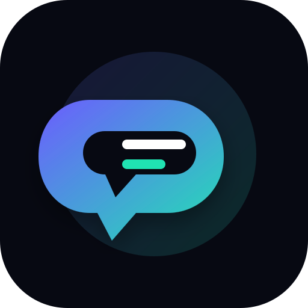

DON’T STOP
INSTALLIERBAR • OFFLINE SPIELBARDON’T STOP kann direkt gestartet oder installiert werden. Auf unterstützten Handys erscheint die App auf dem Startbildschirm, auf dem PC als eigene Anwendung.
📱 HandyInstallieren und wie eine normale App vom Startbildschirm öffnen.
🖥️ PCAls eigene App installieren und ohne normalen Browser-Tab spielen.
💾 SpeicherSpielstand automatisch lokal sichern und beim nächsten Start laden.
Installationsoptionen werden geprüft …
Speicherstatus
Lokaler Spielstand: wird geprüft …